C4D中四种基本的曲线运动控制方式

一、前言
最近刚开始学习 Cinema 4D 这款强大的建模软件的运动相关知识，暂时学习的东西不多，看的时候也能当场理解掌握，但是发现回过头来学过的东西早已经抛之脑后了，看来学习方法还是不对，必须学习之后要做总结吧，特别是一些很容易混淆的概念和方法，不总结真的是云里雾里啊。 :cold_sweat:
今天总结一下最近学习的 C4D 中几种最基本的控制曲线运动的方法，为什么要说曲线控制呢？我们知道，骨骼是不能直接绑定在曲线上的，骨骼只对 Mesh 多边形物体绑定有效，所以控制曲线的运动需要一些特殊的方法实现，目前我知道的有以下 4 种方式，仅供总结参考：
- 曲线追踪的方式
- XPRESSO控制曲线
- IKSpline的骨骼控制
- IK骨骼结合XPRESSO控制
下面一一作简单介绍，只介绍他们的大概实现原理，具体的比较和优缺点暂时只能从表面现象观察吧，在实际应用中还需要更多的学习和探索。
二、四种基本方式
1. 曲线追踪的方式
这是最简单也很有效的方法，甚至连曲线 Spline 都不用建立。
如图建立 5 个空物体（ Null ），设置好空物体的显示，用来控制曲线的操纵杆。然后在运动图形菜单中添加曲线追踪器。

在曲线追踪器中设置追踪对象为 5 个空物体，设置追踪模式： Connect All Objects ，设置曲线类型为： Akima ，这样保证曲线比较平滑。
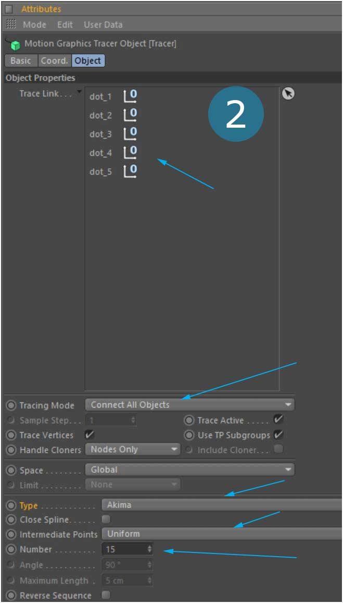
添加 Sweep 扫描这样能更加直白地看到曲线的运动形态，接着就可以用空物体代表的控制杆来操控曲线了。是不是很方便？ :smile:
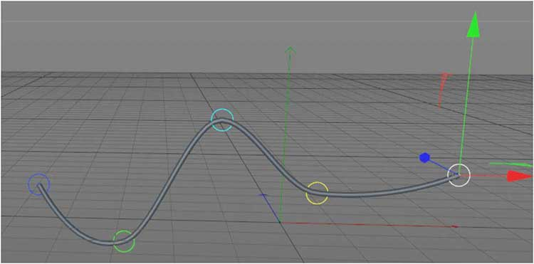
2. XPRESSO控制曲线
Cinema 4D 中的 XPRESSO 标签功能很强大，才刚刚接触就被它的易用性震撼到了，真的恨强，对于不喜欢编程的朋友来说确实是一剂良方。用 XPRESSO 控制曲线的思路也很简单： Spline 由点控制，点又由操控点通过 XPRESSO 控制，达到最终操控点控制曲线的目的。
和上面第一种方法类似，建立 5 个空白对象作为操控点，然后还需要建立一个 4 分段（ Segment ）的 Spline （添加 Sweep 扫描这样更加清晰直白），如下图：
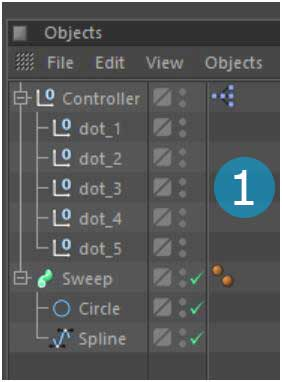
记住，和上面方法一样，为了让曲线更加平滑过渡，需要设置曲线的形态： Akima ，设置点插值方式为： Uniform ，数量多一点：
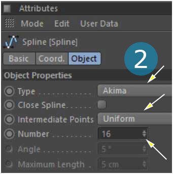
添加 XPRESSO 标签，设置他们之间的连接，这里需要用到层级（ Hierarchy ），层级能够迭代输出某一层或者某一序列的物体，通过层级把 5 个控制点分别输出并控制 Spline 上的对应点的 Global Position ，那样曲线上的点的位置就会跟随相对应的控制点了：

关于 XPRESSO 大家可以参考官方文档，也可以看我推荐的数字人博客的相关文章，我这里对层级（ Hierarchy ）的参数设置是采用的绝对路劲（ Absolute Reference ）和开始路劲向下（ D ）、迭代路劲往后（ N ），具体参数定义我在文章之后参考资料中会写到，具体设置如下：
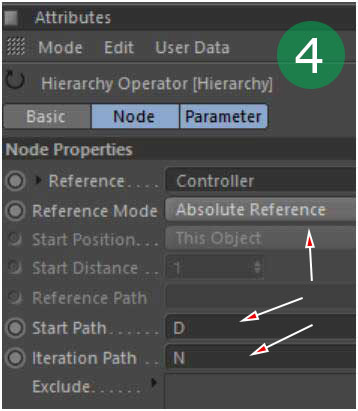
这样 XPRESSO 就起作用了， Spline 上的每个点都受到相应控制点的控制而跟随运动：
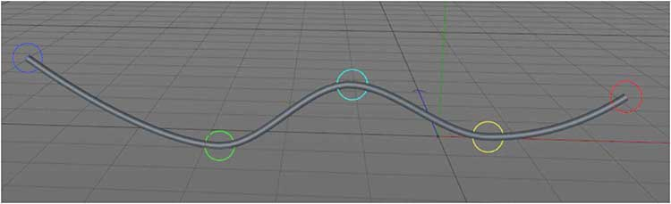
3. IKSpline的骨骼控制
除了以上方法后，还有就是大家很容易想到的是通过骨骼绑定控制曲线运动的方法，骨骼运动系统非常强大，但是，骨骼并不能直接绑定曲线，他只能绑定 MESH 多边形物体，那么如果利用骨骼的话可以怎么做呢？——答案是 IKSpline 骨骼标签。
如下图建立 Spline 曲线并设置相应参数，在工具栏中选 Spline to Joints 命令转化曲线为关节，转化后在根关节添加 IKSpline 标签。
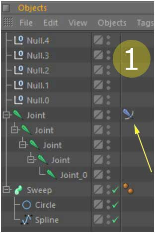
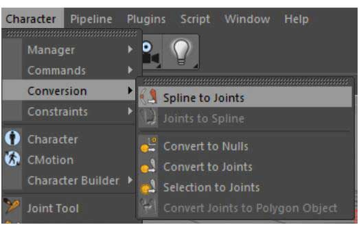
设置 IKSpline 参数，把曲线和末关节分别拖入对应参数位置，同时，我们并不能直接通过控制骨骼来控制曲线，那样会很不方便，包括移动旋转等，我们需要创建操纵杆来达到控制骨骼关节和曲线的目的，所以我们需要添加手柄（ Handles ），并创建其形态（ Add -> Create ），依次创建出现 5 个操纵杆：
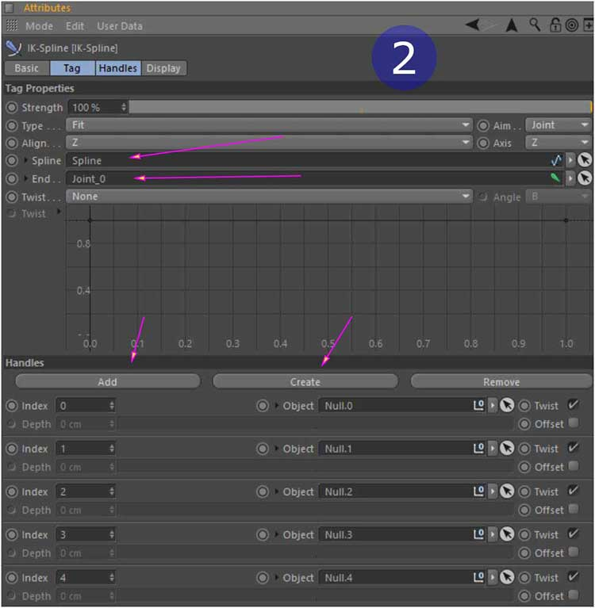
这样我们就达到目的了，通过操纵杆控制 IKSpline 骨骼然后间接达到控制曲线的目的：
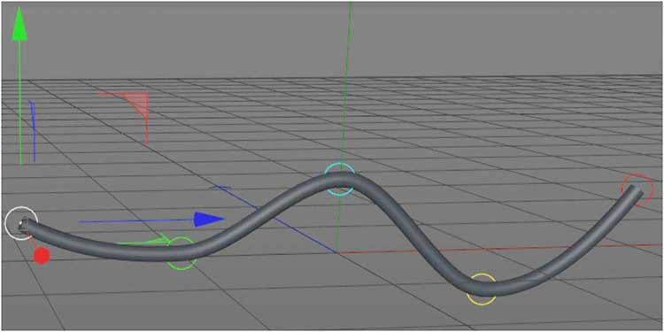
4. IK骨骼结合XPRESSO控制
上面的方法中使用了 IKSpline 关节控制曲线的方式，除此之外，我们其实还可以利用关节运动加上 XPRESSO 控制功能也能同样达到控制曲线的目的。
思路大致是这样的：我们通过创建骨骼关节并利用 XPRESSO 把相应关节绑定到曲线的对应点上，再利用 IK 标签控制骨骼运动从而实现间接控制曲线运动的目的。 IK 标签是骨骼绑定中最常用的角色命令，它和 IKSpline 不同，利用 IK 标签可以绑定到多边形上来创建达到更加复杂的形体运动。
同上一步骤，创建曲线，分段，设置参数，转化成关节，因为我们需要添加 XPRESSO 标签，最好是再创建一个空物体作为所有关节的根物体（ Root ），在根物体上添加 XPresso 标签，同时给关节添加 IK 标签，设置 IK 尾关节和添加目标手柄：
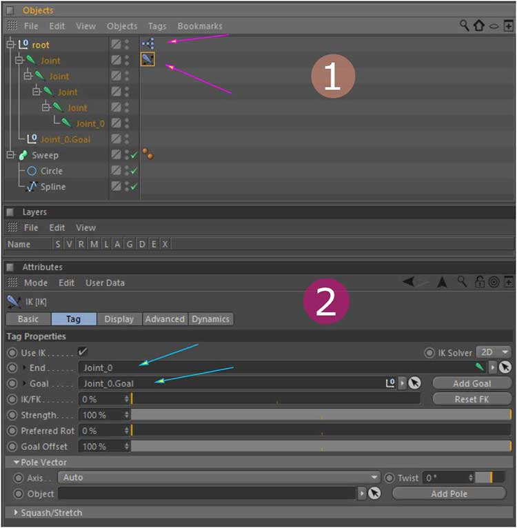
同上面的第二种 XPresso 方法一样，设置其节点和参数如下：
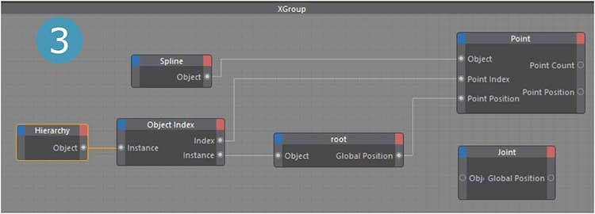
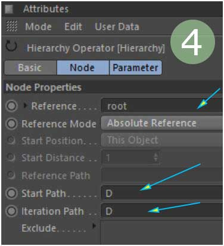
是不是动起来了？而且和骨骼绑定是相一致的。 :blush:
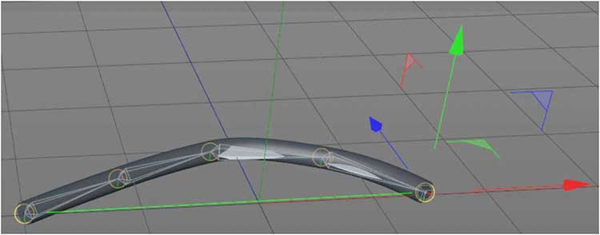
三、总结
控制曲线的用途还是有很多的，毕竟建模后很多管子之类的物体都是用曲线方式生成更方便，当然直接用模型也可以，如果用曲线的话，那么就可以用以上方法结合其他的途径达到各种运动控制的目的了。上面的几种方法中，其实只有骨骼关节控制才能够达到一个控制点的位移影响所有点的位置的效果，其他方法只能控制曲线上当前点的位置和状态，如果觉得抽象，你完全可以尝试一下。 :stuck_out_tongue_winking_eye:
简单的回顾总结一下自己刚刚学习的一点新知识， C4D 才开始学习，还有很多东西都是未知的，学海无涯啊，在学习的海洋里畅游的时候，还是不能忘记回头看看自己曾经游过的地方遇到了些什么精彩或者惊险的玩意，不然很容易忘记接下来该怎么前行了，所谓学而不思则罔，思而不学则殆！
最后，强烈推荐参考数字人老师的学习空间相关博客文章，下面参考资料里有链接，他的文章内容讲的非常详细到位而且也有很多应用实例讲解，详细你会仔细品读的。 :smiley:
参考资料：
数字人的学习空间： http://digitalman.blog.163.com/
C4D R17 帮助文档： http://c4d.cn/help/r17/US/html/1000.html
XPRESSO路劲设置参数解释：
- U: [up one hierarchical level] U 代表向上一层，往上寻找
- D: [down one hierarchical level] D 代表向下一层，往下寻找
- P: [previous object on current hierarchical level] P 在当前层的前一个物体对象
- N: [next object on current hierarchical level] N 是当前层的下一个物体对象
- F: [first object on hierarchical level] F 是的第一个对象
- L: [las object on hierarchical level] L 是最后一个对象